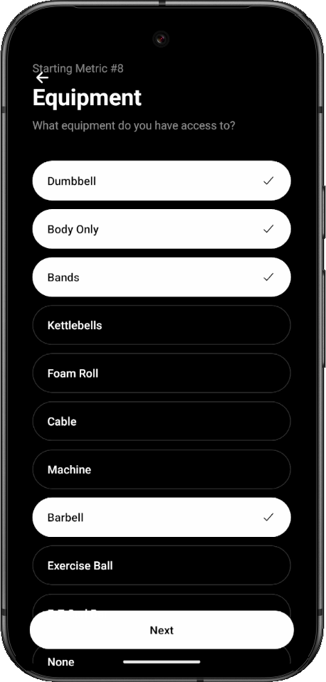
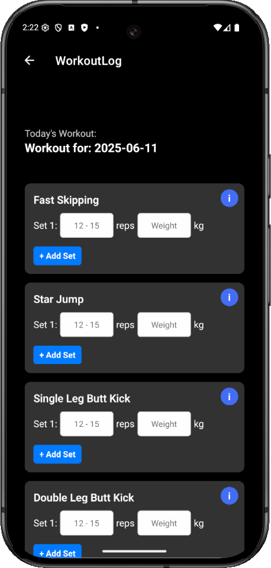

Application development
HustleMuscle
A fitness application with authentication, workout logging, progress tracking and exercise customization.
Overview
HustleMuscle was developed by a team of four. It brings account access, workout records, progress tracking and exercise customization into a mobile fitness application.
My contribution
- Contributed to application logic and authentication.
- Worked with stored user data.
- Participated in integration and testing.
- Served as Scrum Master alongside development responsibilities.
Approach
The documented contribution focuses on application behavior, authentication, data handling and integration. These are team contributions with my involvement in the areas listed above.
The specific technical implementation and responsibility breakdown will be added when confirmed. This page does not assume a framework from the broader skills inventory.
App screens




Status and limitations
Exact implementation details and documented results are still pending. Diet tracking is omitted because it is not confirmed in the portfolio content source.
These project notes describe the currently documented work. Further technical details are still being prepared.